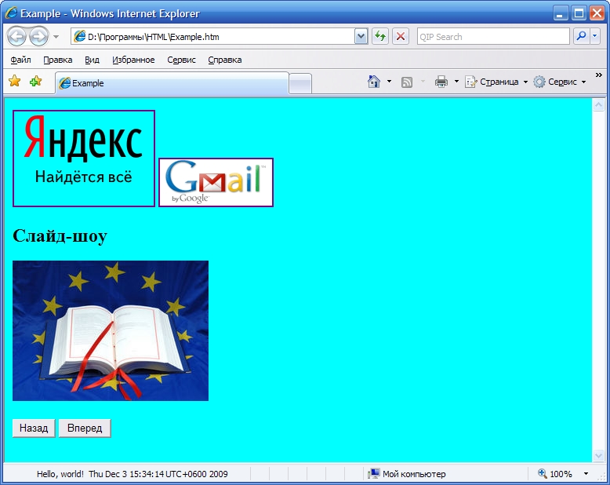

Сибирский государственный университет
телекоммуникаций и информатики
Лабораторные задания по курсу
"Введение в Интернет"
Лабораторная работа N 2.16
Реклама: строка состояния, баннеры и слайд-шоу.
- Поместите в строку состояния бегущую слева направо строку с указанием даты и времени.
- Организуйте на странице несколько баннеров, по нажатию на которые открывается соответствующая страница.
- Организуйте на странице слайд-шоу из нескольких рисунков, под ними поместите кнопки "Вперед" и "Назад", по нажатию на которые изобращение меняется, соответственно, на следующее и предыдущее.
Это должно выглядеть приблизительно так:
